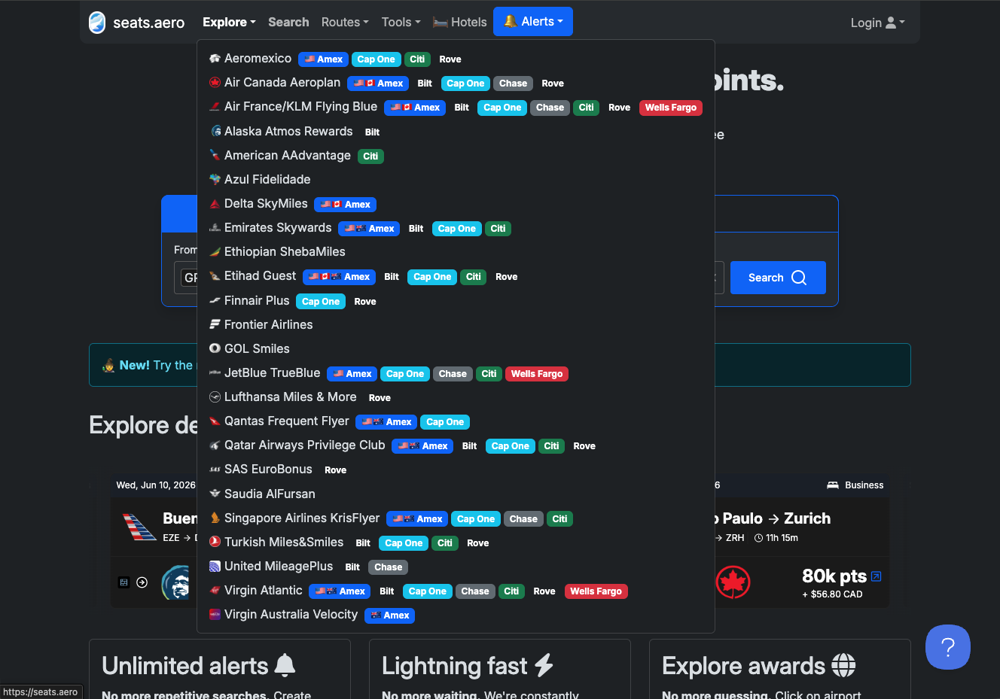
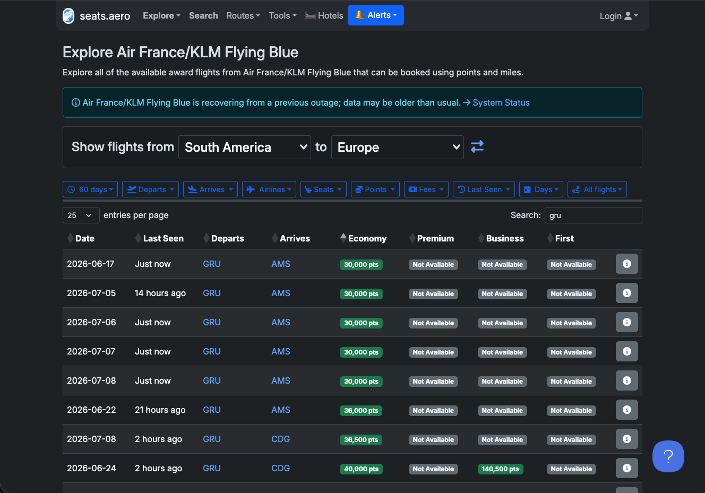
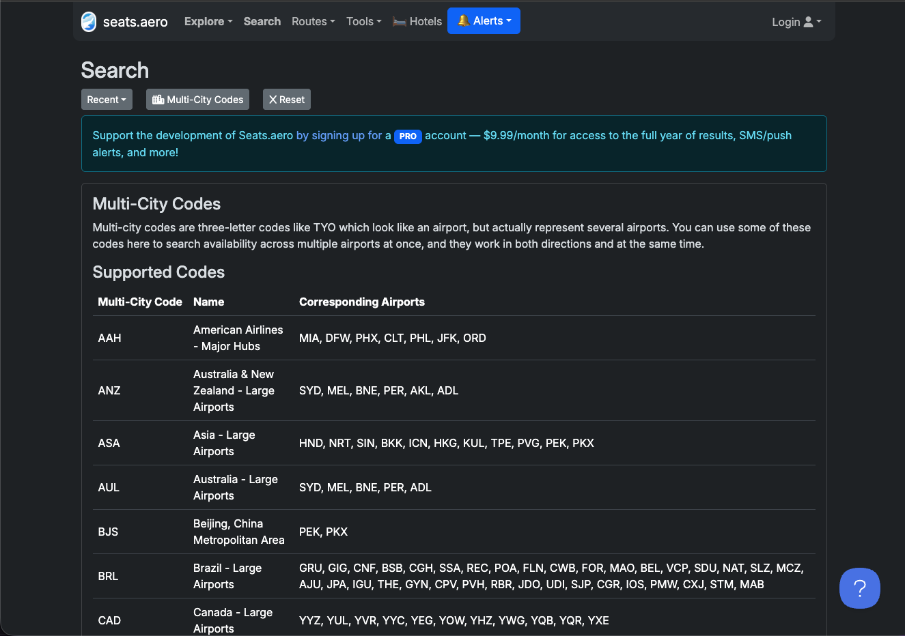
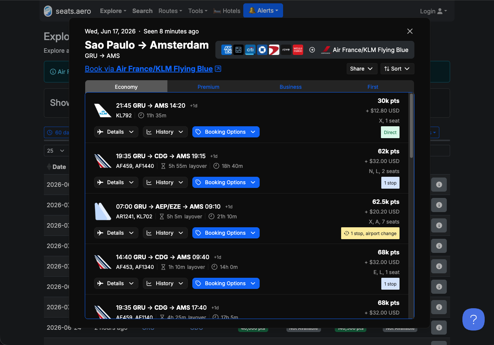
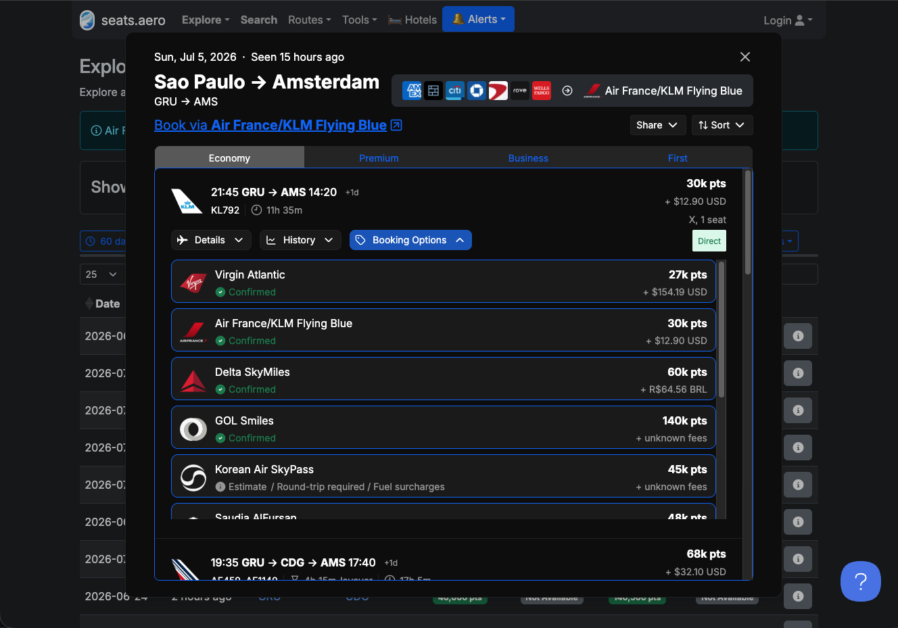

Lendo o Seats.aero como um pro brasileiro
Seats.aero é gringo. Os filtros, os botões de cartão, a lista do Explore — tudo foi feito pensando em americano com Amex e Chase. Aqui está a tradução BR que te falta: quais programas valem clicar, o que cada tela significa, e como sair do "achei" pro "emiti".
Quais programas vale a pena escolher
Quando você clica em "Explore" no topo, abre uma lista gigante de programas. A maioria é inútil pra brasileiro. Aqui vai a tradução.

Print 1: o menu "Explore" do Seats.aero (clicado no topo).Primeiro: ignora os botões coloridos
Aquelas tags Amex, Cap One, Citi, Chase, Bilt, Rove, Wells Fargo ao lado de cada programa são cartões americanos que transferem pontos pra esses programas. Você não tem nenhum deles. Ignora. O que importa é só o nome do programa do lado esquerdo.
Antes: Explore ≠ Search
Tem dois modos de busca no Seats.aero, e a maioria mistura os dois. A regra:
| Modo | O que faz | Quando usar |
|---|---|---|
| Explore | Você escolhe 1 programa por vez e o Seats varre toda disponibilidade que esse programa indexa, por região. | Quando você é flexível com destino e quer ver "o que tá rolando" naquele programa (ex: "achar qualquer voo de 5ª liberdade saindo do BR"). |
| Search | Você define origem + destino + datas e o Seats consulta vários programas ao mesmo tempo. | Quando você já sabe a rota e quer comparar quanto cobra cada programa (ex: "GRU → MAD em julho, qual o programa mais barato?"). |
A regra de ouro pra escolher (no modo Explore)
Os 4 programas que você DEVE filtrar (pro brasileiro)
Vale ficar de olho (nível 2)
🔍 Use só como motor de busca (não dá pra emitir, mas vale clicar)
Programas brasileiros: cuidado com o uso
Ignora por completo (pelo menos por enquanto)
Lendo a tabela de datas e preços
Depois de escolher um programa (ex: Flying Blue) e duas regiões (ex: South America → Europe), aparece essa tabela.

Print 2: resultados de Flying Blue, South America → Europe.Os filtros que importam
- 60 days — janela de busca. Aumenta pra 90 ou 180 dias se você é flexível.
- Cabin — Economy, Premium, Business, First. Premium award internacional sempre vale a pena pela diferença gritante com o preço em dinheiro.
- Points — teto de milhas. Filtra resultado caro.
- Fees — teto de taxa em USD. Filtro mais importante depois de cabine. Coloca máximo US$ 100 e elimina as armadilhas tipo Virgin Atlantic.
- Last Seen — quando o Seats viu o assento pela última vez. Filtre por "Just now" ou "horas atrás" — qualquer coisa de mais de 1 dia, o assento provavelmente sumiu.
O código de cores das células (importante!)
Cada data + cabine tem uma cor. Não é decoração — é informação:
- Célula verde = voo direto. Geralmente custa menos milhas e tem mais chance de existir como tarifa award. Sempre prefira verde.
- Célula azul = voo com uma ou mais conexões. Cada trecho consome inventário, então custa mais milhas. Útil quando o direto não tem.
- "Not Available" = nem adianta procurar nesse dia. Seats já confirmou que não tem assento award. Economiza horas de busca manual.
• Busca ao vivo (sem depender do cache)
• Janela completa de 365 dias (toda a temporada)
• Alertas ilimitados de rotas
• Filtro por cabine específica
• Histórico de preço da rota — você vê se o preço atual está caro, barato ou no padrão histórico, e decide se vale emitir agora ou esperar
• Mais programas indexados
Se você caça executiva 1× por ano, uma única emissão paga vários meses de assinatura facilmente. O histórico de preço sozinho já justifica pra quem fica em dúvida na hora de apertar o gatilho.
🌐 Multi-city codes: o segredo de quem pesquisa rápido
O Seats.aero criou códigos agrupadores próprios de 3 letras que agrupam aeroportos de uma região, país ou companhia aérea inteira. Em vez de digitar GRU, GIG, FOR, BSB, REC um por um, você digita BRL e pesquisa o Brasil inteiro de uma vez. Não é IATA padrão — é específico do Seats.

Print: o botão "Multicity codes" da aba Search abre essa lista de agrupadores.| Código | O que agrupa | Quando usar |
|---|---|---|
BRL | Todos aeroportos do Brasil | Quando você tá flexível na cidade de partida (GRU, GIG, FOR, etc.) |
EUR | Principais cidades da Europa (Amsterdam, Barcelona, Berlim, Paris, Dublin, Frankfurt, Istambul, Londres, Munique, Madrid…) | "Quero ir pra Europa, tanto faz qual capital" |
USA | Principais aeroportos dos EUA | EUA com flexibilidade de cidade |
AAH | Hubs da American Airlines (Miami, Dallas, Phoenix, Philly, NY, Chicago) | Pra emitir voo AA com milhas Smiles via acordo bilateral |
UAL | Hubs da United (Houston, Chicago, Newark, Washington) | Pra emitir voo United com milhas Azul |
ASI | Principais aeroportos da Ásia | Tóquio, Singapura, Hong Kong, Bangkok em uma busca |
AUS | Austrália e Nova Zelândia | Sydney, Melbourne, Auckland numa busca |
Onde achar a lista completa: dentro do Seats.aero, no campo de busca da aba Search, clica no botão "Multicity codes". A lista oficial aparece com todos os agrupadores disponíveis.
Clicou no "ⓘ": o que cada coisa significa
Ao abrir o detalhe de uma data, aparecem várias opções de voo — direto, com conexão, classes diferentes. Tradução abaixo.

Print 3: detalhe de São Paulo → Amsterdam em 5 de julho.Decodificando "21:45 GRU → AMS 14:20 · KL792 · 30k pts · X, 1 seat · Direct"
| Campo | Significado |
|---|---|
KL792 | Número do voo (KL = KLM). Quem opera o avião. |
11h 35m | Duração total. Direto, sem espera. |
30k pts | Custo em milhas Flying Blue. 30.000. |
+ $12.90 USD | Taxa em dinheiro paga junto com as milhas. Baixíssima. |
X, 1 seat | Classe tarifária "X" (gaveta econômica de prêmio), com 1 assento disponível. Se quer 2 pessoas, esse voo não serve. |
Direct | Voo direto, sem conexão. Quase sempre mais barato em milhas e melhor. |
Por que conexão custa MAIS milhas?
Veja no print: o voo direto KL792 sai por 30k, mas o voo com conexão via Paris (AF459+AF1140) sai por 68k. Mesmo destino, mesmo dia. Isso porque conexão consome dois trechos award separados — cada trecho gasta inventário. Sempre prefira direto se tiver disponível. Só pega conexão se o direto sumiu ou se você precisa de mais assentos (família).
As classes tarifárias X, E, L, N, R que aparecem? Cada letra é uma "gaveta" de assento diferente. Não precisa decorar — o Seats já te mostra o preço final em milhas. Só importa saber que classes diferentes = preços diferentes.
O mesmo assento, programas diferentes
Clica em "Booking Options" dentro de qualquer voo. O Seats te mostra todos os programas que conseguem emitir aquele mesmo assento — e cada um cobra diferente. Aqui mora o ouro.

Print 4: o mesmo assento KL792 do dia 5/jul, programas diferentes.O exemplo real (e o que ele te ensina)
| Programa | Milhas | Taxa | Veredito |
|---|---|---|---|
| Virgin Atlantic | 27.000 | US$ 154,60 | taxa mata menos milhas, mas a taxa altíssima come o desconto |
| Flying Blue | 30.000 | US$ 12,90 | ponto doce milhas baratas + taxa pífia = a melhor escolha |
| Delta SkyMiles | 60.000 | R$ 64,56 | 2× mais caro em milhas pelo mesmo assento |
| Korean Air SkyPass | 45.000 | + fuel surcharge + ida/volta obrigatória |
armadilha Estimate, não Confirmed; pegadinhas embutidas |
| GOL Smiles | 140.000 | desconhecido | 5× o preço exatamente o mesmo assento, na pior cotação |
As 3 perguntas-filtro pra decidir
- Está marcado "Confirmed" verde? Se for "Estimate", ignora — pode não existir.
- A taxa é baixa? Pra Europa: até US$ 100. Pra América do Sul/EUA: até US$ 50. Taxa alta come o desconto em milhas.
- Eu consigo gerar essas milhas do Brasil? Se a resposta é "não faço ideia", esse não é o programa pra você hoje — vai pro próximo da lista.
Achou Qatar/Iberia no AA, emite com milhas LATAM
Esse é o truque que poucos brasileiros usam. Aproveita o motor de busca da American Airlines pra achar voo de parceiro Oneworld, e emite via LATAM Pass pelo call center usando a tabela fixa — bem mais barato que a tarifa dinâmica.
O passo a passo
No Seats.aero, escolhe Explore → American AAdvantage
Origem: South America. Destino: o continente que você quer. AA é o melhor motor de busca da Oneworld inteira — vai te mostrar inventário de Qatar, Iberia, British, LATAM, etc.
Filtra GRU (ou GIG) e acha um dia com cabine verde
Verde = voo direto. Maior chance de existir como tarifa award nas classes que a LATAM aceita.
Clica em "Book via American Airlines" e confere a classe tarifária
No site da AA, abre "Details" do voo. Procura a letra da classe tarifária. Tem que ser X (econômica) ou U (executiva). Se for outra letra (E, L, N, R, I, O...), a tabela fixa LATAM não aceita.
Anota os dados do voo
Número do voo (ex: QR774), data, horário, origem, destino, classe tarifária (X ou U), cabine.
Liga no call center da LATAM Pass
Pede emissão pela tabela fixa, parceiro Oneworld, classe X (eco) ou U (executiva). Passa os dados do voo. Eles cobram o valor fixo em milhas + taxas.
Compara com o custo em AAdvantage antes de fechar
Às vezes emitir direto em AAdvantage (se você tem essas milhas) é mais barato em quantidade — mas milhas AA são bem mais caras de comprar/acumular do BR. Faz a conta de R$/milheiro × quantidade de milhas pra ver qual sai mais barato no seu bolso.
O mesmo hack vale pras outras 2 alianças
A American é o melhor motor de busca grátis da Oneworld — mas cada aliança tem o seu. E o melhor: nem precisa ter milhas nesses sites pra buscar. Você só usa pra enxergar o assento e emite por um programa BR.
A tabela-ponte que falta na internet brasileira
Achou um programa interessante no Seats.aero. E agora? Esta tabela responde: onde você emite, como gera milha do Brasil, e o que cuidar.
| Programa | Onde emitir | Como gerar milha do Brasil | Cuidados |
|---|---|---|---|
| Flying Blue Air France/KLM |
flyingblue.com | • Transferência Livelo → Flying Blue (Bradesco/BB, com bônus ocasional) • Transferência Esfera → Flying Blue (Santander, com bônus ocasional) • Transferência Iupp → Flying Blue (Itaú, esporádica) • Compra direta com promo 50% off ou bônus 100% (3-4× por ano) • Voar Air France/KLM/Delta/GOL (parceria Smiles-Flying Blue) |
Preço dinâmico — pode variar 50k–180k pra mesma rota dependendo do dia. Use Promo Rewards mensais. Espere bônus de transferência de pelo menos 80% antes de mandar pontos — sem bônus, raramente compensa. |
| Avianca LifeMiles | lifemiles.com | • Transferência Livelo → LifeMiles (Bradesco/BB, com bônus ocasional) • Transferência Esfera → LifeMiles (Santander, com bônus) • Compra direta em promo (até 145% bônus — a melhor do mercado) • Voar Avianca/Star Alliance |
Sem fuel surcharge (melhor da indústria). Em promo de compra, milheiro sai ~R$ 20. Atendimento ruim — emita online. Bônus de transferência costuma ser fraco vs. comprar direto. |
| Iberia Plus Avios |
iberia.com | • Transferência Livelo → Iberia (Bradesco/BB, com bônus recorrente) • Transferência Esfera → Iberia (Santander, com bônus) • Transferência Iupp → Iberia (Itaú, esporádica) • Compra direta com promo de bônus (50-100%, várias por ano) • Voar Iberia/LATAM (parceiros Oneworld) |
GRU↔MAD executiva ~62k Avios é mítico. Taxas €200-300. Conta unificada com British/Qatar via Avios — você pode mover entre os 3. Sempre espere bônus de pelo menos 80% antes de transferir. |
| British Airways Avios |
britishairways.com | • Transferência Livelo → British (Bradesco/BB, bônus ocasional) • Transferência Esfera → British (Santander) • Compra direta com promo • Avios pool: move livremente entre British ⇄ Iberia ⇄ Qatar |
Cuidado com taxa do Reino Unido: qualquer voo que você emite usando Avios e que passa por Londres num avião da própria British vem com £200-£500 de taxa em dinheiro (governo inglês cobra APD + British adiciona surcharge). O jogo é usar a moeda Avios pra emitir voo de OUTRAS companhias do grupo Oneworld — LATAM, Qatar Airways, American Airlines — que não passam por Londres e por isso não pegam a taxa inglesa. Você acumula no British via Livelo, depois move pra Iberia ou Qatar pelo pool e emite por lá, fugindo da taxa. |
| Qatar Privilege Club Avios |
qatarairways.com | • Transferência Livelo → Qatar (Bradesco/BB, esporádica) • Transferência Esfera → Qatar (Santander) • Avios pool: receber de British ⇄ Iberia ⇄ Qatar (a rota mais usada) • Compra direta em promo |
Qsuite é o melhor produto premium do mundo. 70-95k GRU→Europa via Doha. Taxas razoáveis (sem APD, ao contrário do British). Muita gente acumula via Iberia/British (Livelo) e move pro Qatar pelo pool quando precisa. |
| Aeroplan Air Canada |
aircanada.com | • Sem transferência de bancos BR (nem Livelo, nem Esfera, nem Iupp) • Compra direta em promo (rara, mas existe — bônus 65-85%) • Voar Air Canada/Star Alliance |
Excelente buscador da Star Alliance e taxas muito baixas. Difícil de abastecer do Brasil — na prática, use como motor de busca (vê disponibilidade Star) e emite via LifeMiles, que tem o mesmo inventário e caminho BR muito melhor. |
| TAP Miles&Go | flytap.com | • Transferência Livelo → TAP (Bradesco/BB, bônus 50-100% periódico) • Transferência Esfera → TAP (Santander, bônus esporádico) • Compra direta com promo de bônus (várias por ano) • Voar TAP do Brasil pra Lisboa |
Disponibilidade premium escassa — busque com muita antecedência. Taxas médias €100-250. Bônus Livelo→TAP é uma das rotas mais regulares do mercado BR. |
| Virgin Atlantic Flying Club |
virginatlantic.com | • Sem transferência de bancos BR • Compra direta com promo (rara, raramente compensa) • Voar Virgin Atlantic (sem rota BR hoje) |
Cuidado: tarifa em milhas baixa atrai, mas taxas altíssimas em voos parceiros (US$ 150-400 em SkyTeam, ANA, etc.). Quase sempre arapuca pra brasileiro. Olha o número da taxa antes de qualquer coisa. |
| Turkish Miles&Smiles | miles.turkishairlines.com | • Sem transferência de bancos BR • Compra direta (preço não tão competitivo) • Voar Turkish (GRU↔IST direto, gera milha por voo) |
Tarifa fixa generosa em alguns trechos. Atendimento horrível, emissão muitas vezes só por telefone/chat (site bugado). Pra casos pontuais quando o preço-tabela compensa muito. |
| Delta SkyMiles | delta.com | • Sem transferência direta de bancos BR pra Delta • Compra direta (cara, raramente promo significativa) • Voar Delta/LATAM (parceria SkyTeam-LATAM) |
Programa caro em milhas (cobra 2-3× o preço pelo mesmo assento). Só vale em casos muito específicos quando nenhum outro programa do SkyTeam tem o assento. Pra rotas Delta, prefira Flying Blue (mesmo assento, milhas mais baratas). |
| Singapore KrisFlyer | singaporeair.com | • Sem transferência de bancos BR • Compra direta em promo (raríssima) • Voar Singapore (sem rota BR direta hoje) |
Programa excelente em produto e taxa, mas praticamente impossível de abastecer do Brasil. Só pra quem tem Amex internacional (US/Canadá) ou viajou muito pela Singapore Airlines. Por hora, ignora. |
Do "achei no Seats" ao "emiti a passagem"
A sequência sagrada. Faça nessa ordem, sempre.
Acho o assento no Seats.aero
Programa escolhido, rota, janela ampla (30-60 dias), filtro de taxa máxima ativado, Last Seen recente.
Abro o "Booking Options" e escolho o programa mais barato viável
Aplico os 3 filtros: Confirmed? Taxa OK? Consigo gerar do Brasil? Anoto: programa + milhas + taxa.
Confirmo no site oficial do programa
Abro o site do programa, faço a mesma busca, verifico que o assento ainda existe. O cache do Seats mente — essa confirmação é obrigatória antes de mover qualquer ponto.
Vejo meu saldo no programa
Faltam milhas? Vou pro passo 5. Já tenho saldo? Pulo pro 7.
Transfiro ou compro as milhas
Caminho mais comum: Esfera → Flying Blue, Livelo → Smiles/LATAM/Azul, compra direta em promo pra LifeMiles/Iberia/Qatar/TAP. Confiro o bônus de transferência atual antes de apertar o botão.
Espero a transferência cair
Livelo→Smiles: instantâneo. Esfera→Flying Blue: até 48h. Compra direta: minutos. Nunca conto com prazos otimistas — premium award some em horas.
Emito IMEDIATAMENTE
Não durmo com assento "guardado". Ele só é seu quando o e-ticket está emitido com seu CPF e número de bilhete. Antes disso, não existe.